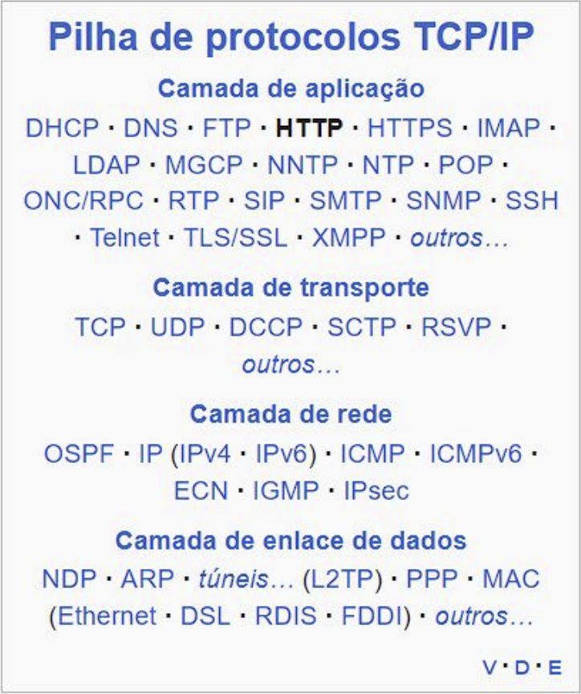
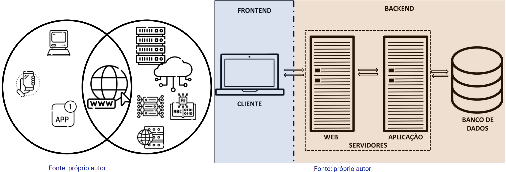
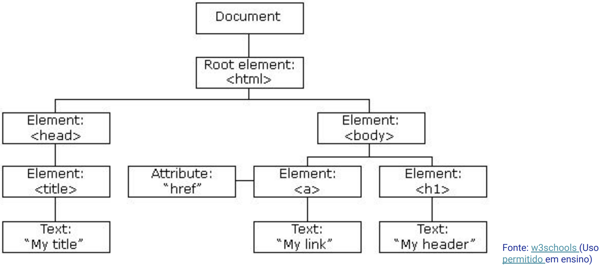
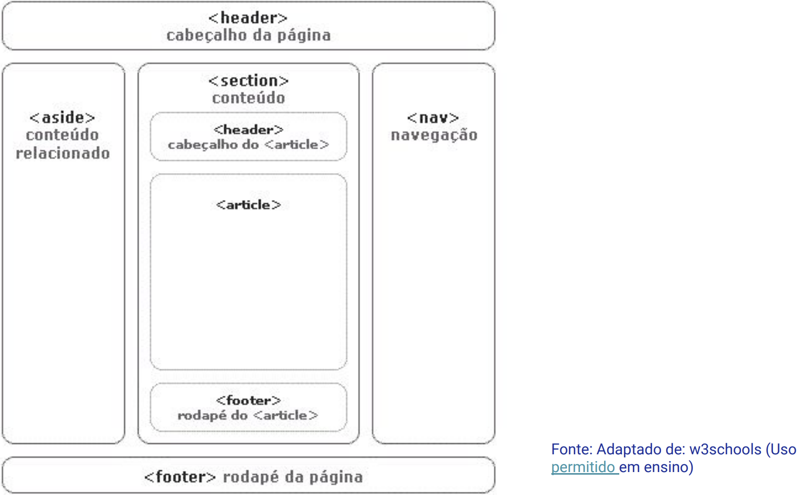
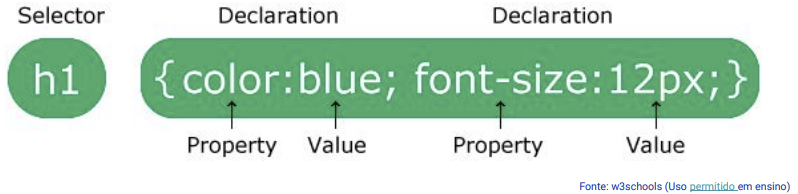

Disciplinas
TÉCNICAS AVANÇADAS DE DESENVOLVIMENTO DE SOFTWARE-T01-2024-2 Concluído
Materiais
Vídeo 1 - [UFMS Digital] Técnicas Avançadas de Desenvolvimento de Software - Módulo 1 - Unidade 1 - Revisão dos fundamentos de Web sendProf° ministrante: Luciano Édipo Pereira da Silva
Conteúdo
- Motivação
- Introdução à Web e seus Fundamentos
- Tecnologia Web e HTTP
- Introdução ao HTML
- Fundamentos e Estrutura
- XHTML - Uma Evolução do HTML
- Diferenças e Padrões
- Introdução ao CSS
- Estilo e Apresentação
Motivação
- Ágil
- DevOps
- Integração Contínua e Entrega Contínua (CI/CD)
- Computação em Nuvem
- Contêineres e Orquestração
- Low-Code/No-Code Development
- Testes de IA e Automação, ML, e IA
Introdução à Web e seus Fundamentos
- Conceitos Básicos
- Lógica de Programação
- Entendimento do Ambiente Web
- Segurança
- Respeito aos princípios Básicos
- Entendimento das Ferramentas e Tecnologias envolvidas
HTTP:

Client Side e Server Side:

Introdução ao HTML


- Tags para texto
- Tags para layout, tabela e formulário
- O Título
- Parágrafos
- Cabeçalhos
- Tags para enumeração, mídia e outras
- Comentários nas páginas HTML

XHTML - Uma Evolução do HTML
Padrão Ano
HTML 1.0 1990
HTML 2.0 1995
HTML 3.2 1997
HTML 4.0 1997
HTML 4.01 1999
HTML 5 2014
XHTML 1.0 1997
XHTML 1.1 1999
XHTML 2.0 X
Diferenças e Padrões: Estrito vs Flexível
XHTML HTML
- XML - Flexibilidade
- Consistência - Facilidade de Uso
- Namespace (suporte - Suporte Universal
outros docs XML)
O HTML5
- Sintaxe Mais Limpa
- Compatibilidade com Dispositivos Móveis
- Tags Semânticas
- Áudio e Vídeo Integrados
- Armazenamento Local
- APIs de Geolocalização
- Gráficos e Animações
- Melhorias na Interatividade
- APIs de Comunicação
- Aprimoramentos nos Formulários
- Aprimoramentos na Semântica
Introdução ao CSS
Definição dos componentes de uma regra CSS
Estilo e Apresentação

Estudo de caso: TaskHub
Desenvolva um sistema web simples para gerenciamento de tarefas:
- Cadastro de tarefas
- Listagem de tarefas
- Marcar tarefas como concluídas
- Aplique algum estilo: Manualmente ou Frameworks CSS